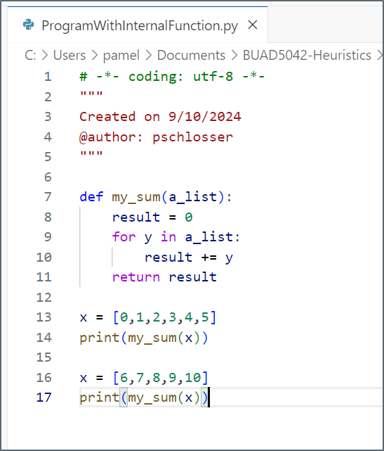
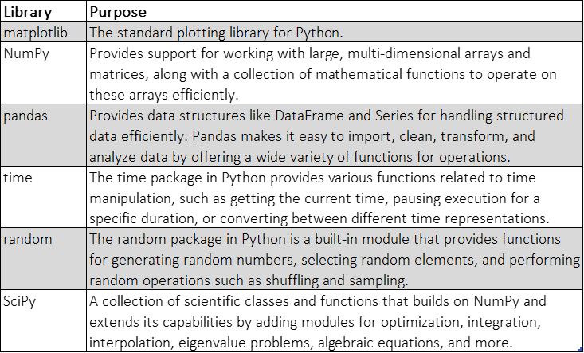

import numpy as np3 Python for Heuristics & NumPy
4 Coding Know-How
- In the field of heuristic modeling, coding know-how is not just a tool—it’s an essential skill that enables you to experiment, adapt, and optimize solutions for complex, real-world problems. As we explore heuristic methods in this MSBA course, having a strong foundation in coding, especially in Python, will allow you to implement and test algorithms efficiently.
- Good coding practices, such as writing clear, modular code and incorporating meaningful comments, are critical for both readability and collaboration. By starting with simple Python examples that highlight these principles, we’ll build the groundwork for more sophisticated modeling tasks, from randomization techniques to optimization algorithms, equipping you with both technical skills and best practices for professional code development.
What problems does this code have?  * Multiple instantiations of the same code within a program cause problems + More opportunities for errors + More maintenance * Blocks of reusable code solve this problem + These are called functions
* Multiple instantiations of the same code within a program cause problems + More opportunities for errors + More maintenance * Blocks of reusable code solve this problem + These are called functions
- To avoid resetting the value of result and preserve the sum of both lists, you can accumulate the sums in a single loop or retain the value of result between the loops.
- Alternatively, you can use Python’s built-in sum() function to simplify the code:
5 Writing Programs with Internal Functions
- Indentation: Function statements must be indented.
- Arguments: Variables passed from calling program to the function
- a_list is an argument required by my_sum
- a_list assumes value of x passed from main
- a_list is an argument required by my_sum
- Return: a return statement sends variables back to main program
- Variable scope: where execution begins
- The first un-indented line that is not a function definition or a global variable
- a_list is defined only in the function when it runs
- Place all functions above the “main” program
- Must be defined before they are used

6 Internal vs External Functions
- Python looks in a few places for functions you import
- Easiest is to place them in the same folder as the program that is using the function
- You can have an external program that is referenced in your code to outsource functions.
- For example, B_ProgramWithInternalFunction.py includes the function definition my_sum.
- BWOInternalFunction.py references B_ext_function to import my_sum, where ext_function is a python file in the same folder.

7 Object Oriented Programming (OOP) vs Procedural Programming
- Procedural Programming:
- In Python, you can program .py files where the code is organized into functions, with data often being passed around between them.
- Functions perform specific tasks but do not group behavior and state (data) together.
- All the code tends to be written in one or a few large files, without much encapsulation or separation of concerns.
- The textbook uses OOP, I will supplement with procedural models.
- Object Oriented Programming (OOP):
- In Python, you can also use OOP to separate different parts of your code, such as algorithms, test cases, and libraries, by encapsulating them in different classes or modules. This leads to a more organized and maintainable codebase.
- What can you separate:
- Algorithm (Core Logic): You encapsulate the algorithm or formula into a class or function within a class.
- Library (Utility Functions):Any utility functions or reusable logic can be put into a separate class (or module) that handles common operations.
- Test Cases (Validation):Testing is often done through separate classes or functions, typically in a separate module.
8 Libraries to Note
 # Revisiting Numpy ## Importing Numpy
8.1 Numpy Definition
- NumPy stands for numerical Python, suggesting that it targets scenarios that are numerically demanding. The base Python interpreter tries to be as general as possible in many areas, which often leads to quite a bit of overhead at run-time.
- NumPy uses specialization as its major approach to avoid overhead and to be as good and as fast as possible in certain application scenarios.
- Vectorization is a powerful concept for writing concise, easy-to-read, and easy-to-maintain code in fields such as finance and algorithmic trading. With NumPy, vectorized code does not only make code more concise, but it also can speed up code execution considerably (by a factor of about eight in the Monte Carlo simulation, for example).
8.2 Basic Array Creation
# Creating a simple numpy array from a Python list
array = np.array([1, 2, 3, 4])
print("Array:", array)Array: [1 2 3 4]8.3 Element-Wise Operations
- Element-wise operators are mathematical or logical operations applied independently to corresponding elements in arrays or matrices of the same shape.
- Each element in one array is combined with the corresponding element in the other array using the operator.
- In the context of arrays (such as in NumPy), common element-wise operators include basic arithmetic operators:
- Element-wise addition +
- Element-wise subtraction -
- Element-wise multiplication *
- Element-wise division /
- Element-wise exponentiation **
# Performing element-wise addition
array = np.array([1, 2, 3, 4])
added_array = array + 5
print("Added Array:", added_array)Added Array: [6 7 8 9]a = np.array([1, 2, 3])
b = np.array([4, 5, 6])
c = a + b
print(c)[5 7 9]8.4 Taking an Exponent: np.exp
- np.exp is a function in the NumPy library that calculates the exponential of all elements in an input array. Specifically, it computes the base-e exponential function, which is 𝑒^𝑥, where 𝑒 is Euler’s number (approximately 2.71828), and 𝑥 is the input array or scalar.
# Applying np.exp to the array
array = np.array([1, 2, 3, 4])
exp_array = np.exp(array)
print("Exponential Array:", exp_array)Exponential Array: [ 2.71828183 7.3890561 20.08553692 54.59815003]- np.exp from Simulated Annealing example
- This function is part of a Simulated Annealing algorithm, specifically handling the temperature decay mechanism to decide whether to accept a new solution, even if it’s worse than the current one. Here’s a breakdown of the function based on the np.exp command and the logic:
- tmp_obj_val: The objective value of a new (temporary) solution.
- obj_val: The objective value of the current solution. temperature: The current temperature in the simulated annealing process, which controls how likely the algorithm is to accept worse solutions.
- A random number r between 0 and 1 is generated. This represents a threshold for whether the new solution will be accepted using random.rand()
- The probability p of accepting the new solution is computed using the exponential function.
- If the random value r is less than the calculated probability p, the function returns True, meaning the new solution is accepted (even if it’s worse). If r is greater than p, the new solution is rejected, and the current solution is maintained.
- The function decides whether to accept a new solution in simulated annealing, balancing exploration and exploitation based on the temperature and objective values of the solutions. The np.exp() function ensures that worse solutions have a chance to be accepted, particularly early in the process, fostering a broader search space.
# Simulated annealing temperature decay
def determine(self, tmp_obj_val, obj_val, temperature):
r = np.random.rand()
p = np.exp((tmp_obj_val - obj_val) / temperature)
return r < p8.5 Taking a square root: np.sqrt()
- np.sqrt is a function in NumPy that returns the non-negative square root of an element-wise input array. It operates on each element of the array and computes the square root.
# Applying np.sqrt to the array
sqrt_array = np.sqrt(array)
print("Square Root Array:", sqrt_array)Square Root Array: [1. 1.41421356 1.73205081 2. ]- The Ackley function is commonly used as a benchmark problem in optimization, and is known for its many local minima. The Ackley function uses the np.sqrt within its formula.
def ackley(s):
a, b, c = 20, 0.2, 2 * np.pi
n = len(s)
sum_sq_term = np.sum(s**2)
cos_term = np.sum(np.cos(c * s))
term1 = -a * np.exp(-b * np.sqrt(sum_sq_term / n))
term2 = -np.exp(cos_term / n)
return term1 + term2 + a + np.e9 Sorting the data: np.argsort
- In various evolutionary algorithms (such as genetic algorithms or simulated annealing), selecting the most “fit” or optimal solutions from a population is crucial for convergence toward the global optimum.
- By sorting individuals based on fitness, the algorithm can efficiently identify the most promising candidates for further exploration (e.g., crossover, mutation) or intensify the search around high-quality solutions.
- The use of np.argsort allows for a fast, reliable way to rank individuals, ensuring that the evolutionary process focuses on refining the best candidates and discarding those with lower potential.
# Dummy population and fitness values
population = np.array([[1, 2], [3, 4], [5, 6], [7, 8], [9, 10]])
# Assign dummy fitness values
fitness = np.array([10, 30, 20, 40, 50])
# Sort population based on fitness
indices = np.argsort(fitness)
print(indices)
sorted_population = population[indices]
# Select top 3 individuals
top_individuals = sorted_population[:3]
print(top_individuals)[0 2 1 3 4]
[[1 2]
[5 6]
[3 4]]9.1 Selecting the Max: np.argmax
- Finding the Index of the Maximum Element in a 1D Array: The np.argmax function returns the index of the first occurrence of the maximum value in the array. In this case, the maximum value is 7, and it occurs at index 2.
arr = np.array([1, 3, 7, 2, 5])
index = np.argmax(arr)
print("Array:", arr)
print("Index of max element:", index)
print("Max element:", arr[index])Array: [1 3 7 2 5]
Index of max element: 2
Max element: 7Array: [1 3 7 2 5]
- Using np.argmax with a 2D Array (Row-wise & Column-wise): np.argmax can work on multi-dimensional arrays. By specifying axis=0 or axis=1, you can find the maximum values column-wise or row-wise, respectively. For axis=0, you get the indices of the maximum elements for each column, and for axis=1, you get them for each row.
arr_2d = np.array([[1, 2, 3], [4, 5, 1], [0, 6, 2]])
# Find the index of the max element in the flattened array
max_index_flat = np.argmax(arr_2d)
print("Flattened array index:", max_index_flat)Flattened array index: 7- Number 6 is in index 7, starting at index 0 and counting up across each row.
[[1 2 3]
[4 5 1]
[0 6 2]]
# Find the index of the max element along each column (axis=0)
max_index_col = np.argmax(arr_2d, axis=0)
print("Max element index for each column:", max_index_col)Max element index for each column: [1 2 0]- 4 is in index 1, 6 is in index 2, and 3 is in index 0, counting across each column starting at index 0. [[1 2 3]
[4 5 1]
[0 6 2]]
# Find the index of the max element along each row (axis=1)
max_index_row = np.argmax(arr_2d, axis=1)
print("Max element index for each row:", max_index_row)Max element index for each row: [2 1 1]- 3 is in index 2 in the row, 5 is in index 1, and 6 is in index 1, counting across each row starting at index 0. [[1 2 3]
[4 5 1]
[0 6 2]]
10 Random Number Generation
- Random numbers are key to both genetic algorithms (mutation, crossover) and simulated annealing (random perturbations). Basic example using np.random.rand() to generate uniform random numbers between 0 and 1.
rand_nums = np.random.rand(5)
print(rand_nums)[0.23310737 0.33182821 0.78032256 0.57084959 0.0802333 ]10.1 Standard Normal Distribution
- Generating random numbers from a standard normal distribution (mean=0, std=1).
# Generating random values from the standard normal distribution
random_values = np.random.standard_normal(5)
print("Random Standard Normal Values:", random_values)Random Standard Normal Values: [-0.74355748 -0.39906898 -0.98825145 0.1670147 0.70464814]10.2 np.random.uniform
- In hill climbing, the algorithm often starts with a random solution. This can be simulated with np.random.uniform, which generates random numbers between a specified range.
# Generate a random starting point for the hill climbing algorithm
random_start = np.random.uniform(low=-10, high=10, size=5)
print(f"Random start: {random_start}")Random start: [ 5.58221408 8.47507526 3.86677417 -4.54529836 0.94077938]10.3 np.random.randint
- np.random.randint(low, high=None, size=None, dtype=int)
- low: The lower boundary of the random integers (inclusive).
- high: The upper boundary of the random integers (exclusive). If not provided, random integers are generated between 0 and low.
- size: The shape of the output array (optional). If not provided, a single integer is returned.
- dtype: The desired data type of the output array, by default int.
# Generate 5 random integers between 10 and 20
random_integers = np.random.randint(10, 20, size=5)
print(random_integers)[12 15 15 19 10]10.4 np.random.randint from Simulated Annealing
This function, transit(), is used to modify a solution sol as part of a heuristic search process, likely for algorithms like genetic algorithms, hill climbing, or simulated annealing. The goal is to explore the solution space by introducing a small, random change (or “transition”) to the current solution.
- The function takes a single argument, sol, which is likely a binary array or list (a list of 0s and 1s).
- t = sol.copy(): A copy of the solution sol is made, named t. This is important because we don’t want to modify the original solution directly; instead, we work on the copy t.
- i = np.random.randint(len(sol)): The randint function from NumPy is used to randomly select an index i between 0 and the length of sol - 1. This selects a random position in the solution array.
- t[i] ^= 1: This is a bitwise XOR operation. In the context of a binary solution (a list of 0s and 1s), it flips the value at index i:If t[i] is 0, it becomes 1.If t[i] is 1, it becomes 0. This operation introduces a small, random change to the solution by flipping one bit.
- return t: After flipping one bit, the modified solution t is returned.
# Transition function (T) def transit(sol): new_sol = sol.copy() index = np.random.randint(len(sol)) new_sol[index] = 1 - new_sol[index] # Flip a random bit return new_sol
11 Looking at Time
- The code compares the time it takes to sort lists of 1,000,000 elements using both Python’s built-in sorting method and NumPy’s sorting methods (quicksort and mergesort).
- It tests performance for sorting random lists as well as lists initially sorted in reverse order.
- Library Imports:
- time: for measuring execution time.
- random: for shuffling a list randomly.
- numpy: for utilizing NumPy arrays and sorting functionalities.
- Random List Generation:
- A function x_rand() is defined to generate a list of 1,000,000 integers ranging from 0 to 999,999 and then shuffles them randomly using random.shuffle().
import time
import random
def x_rand():
x = list(range(1000000))
random.shuffle(x)
return xx = x_rand()
start_time = time.time()
x.sort()
print("Time to sort random list:",time.time() - start_time)Time to sort random list: 0.3227391242980957x.sort(reverse=True)
start_time = time.time()
x.sort()
print("Time to sort list in reverse order:",time.time() - start_time)Time to sort list in reverse order: 0.0050048828125x_numpy = np.array(x_rand())
start_time = time.time()
x_numpy.sort()
print("Time for numpy quicksort of random list:",time.time() - start_time)Time for numpy quicksort of random list: 0.04000496864318848x_numpy = np.array(x_rand())
start_time = time.time()
x_numpy.sort(kind='mergesort')
print("Time for numpy mergesort of random list:",time.time() - start_time)Time for numpy mergesort of random list: 0.0520038604736328112 Formula vs LaTex vs Python
- A numerical method used to approximate the solution of stochastic differential equations (SDEs) like the Geometric Brownian Motion (GBM). This method discretizes the continuous time process into small time steps and approximates the evolution of the stochastic process.
- The formula is central in financial mathematics, particularly in the modeling of asset prices. This model is widely used to describe the evolution of stock prices and other financial assets over time in a stochastic (random) way. Here’s a breakdown of the components and how they fit into finance:
- Formula: \(S_T = S_0 \exp((r - 0.5 \sigma^2) T + \sigma z \sqrt{T})\)
- In LaTex: S_T = S_0 ((r - 0.5 ^2) T + z )
- In Python this translates to the following: S_T = S_0 * exp((r - 0.5 * sigma ** 2) * T + sigma * z * sqrt(T))
13 Modelling Stock Prices
\(S_T = S_0 \exp\left( (r - 0.5 \sigma^2) T + \sigma Z \sqrt{T} \right)\)
- The terminal stock price \(S_T\) is modeled using the Geometric Brownian Motion (GBM), a common approach to model stock prices.
- \(S_0\): The initial stock price.
- \(r\): The risk-free interest rate.
- \(T\): Time to maturity (in years).
- \(\sigma\): The volatility of the stock.
- \(S_T\): The terminal stock price at time \(T\).
- \(Z\): A random variable drawn from a standard normal distribution.
13.1 Comparing Model Clock Time With/Without NumPy
13.1.1 Without Numpy
import random
from math import exp, sqrt
import time
# Initial stock price
S0 = 100
# Risk-free rate
r = 0.05
# Time horizon (1 year)
T = 1.0
# Volatility
sigma = 0.2
values = []
# Start tracking wall time and CPU time
start_wall_time = time.time()
start_cpu_time = time.process_time()
for _ in range(1000000):
ST = S0 * exp((r - 0.5 * sigma ** 2) * T +
sigma * random.gauss(0, 1) * sqrt(T))
values.append(ST)
# End tracking wall time and CPU time
end_wall_time = time.time()
end_cpu_time = time.process_time()
# Calculate time differences
wall_time = end_wall_time - start_wall_time
cpu_time = end_cpu_time - start_cpu_time
# Print timing information
print(f"CPU times: {cpu_time:.2f} s (user and sys combined)")
print(f"Wall time: {wall_time:.2f} s")CPU times: 0.47 s (user and sys combined)
Wall time: 0.70 s13.1.2 With Numpy
import numpy as np
import time
# Initial stock price
S0 = 100
# Risk-free rate
r = 0.05
# Time horizon (1 year)
T = 1.0
# Volatility
sigma = 0.2
# Start tracking wall time and CPU time
start_wall_time = time.time()
start_cpu_time = time.process_time()
ST = S0 * np.exp((r - 0.5 * sigma ** 2) * T +
sigma * np.random.standard_normal(1000000) * np.sqrt(T))
# End tracking wall time and CPU time
end_wall_time = time.time()
end_cpu_time = time.process_time()
# Calculate time differences
wall_time = end_wall_time - start_wall_time
cpu_time = end_cpu_time - start_cpu_time
# Print timing information
print(f"CPU times: {cpu_time:.2f} s (user and sys combined)")
print(f"Wall time: {wall_time:.2f} s")CPU times: 0.00 s (user and sys combined)
Wall time: 0.02 s